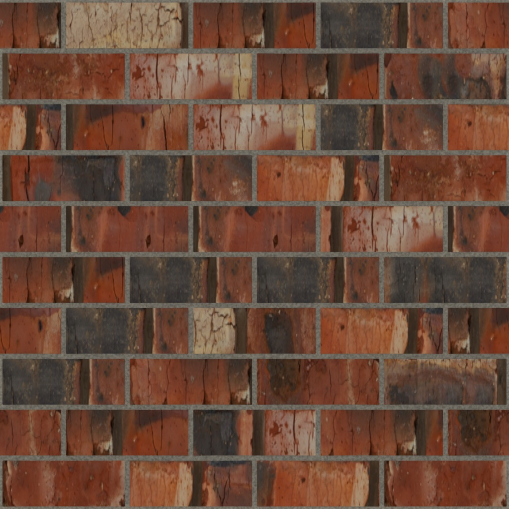
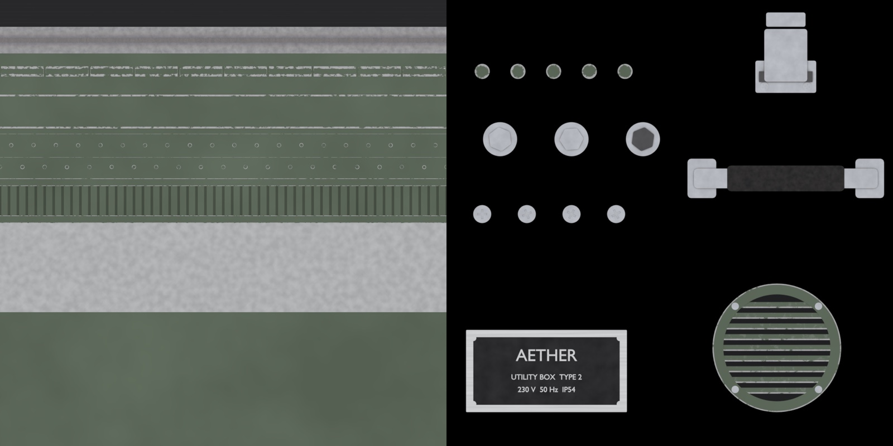
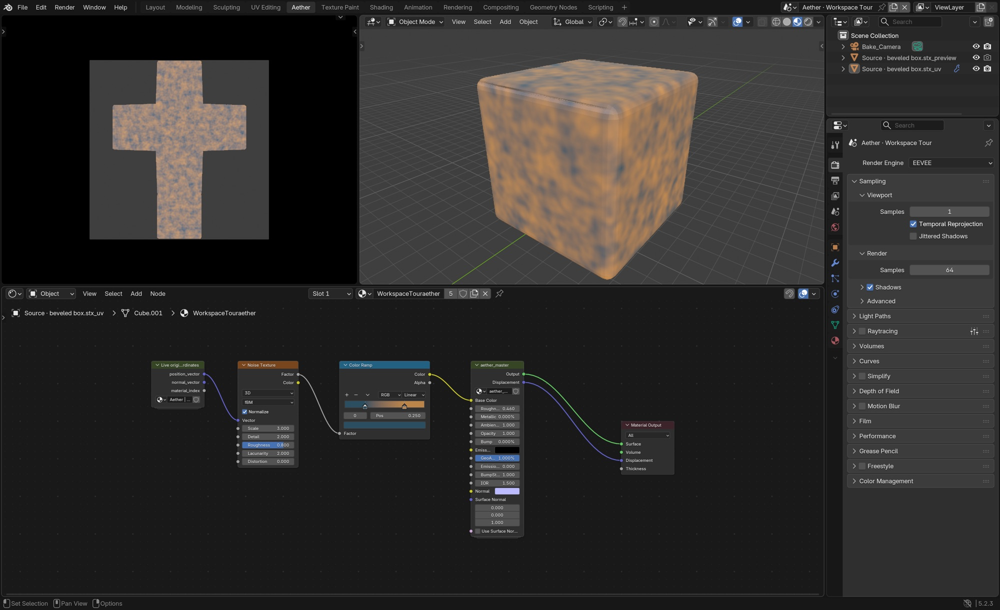

Aether became the workflow
The most important Aether update is not a new button. It is that the project now has a much clearer idea of what it is for.
Development notes from the current Aether, Devkit, and PlushBlender work.

From combining tools to defining a system
I used to describe Aether as the place where xBake and TextureLab came together. That is historically true, but it no longer explains the project. Aether now has its own authoring model: build the material as real structure, read that structure into a coherent set of maps, and keep the final asset simple.
A surface is not just a color image plus noise. It has thickness, overlap, joints, repeated elements, material identity, wear, and a scale at which all of those choices need to read. In Aether, geometry and Geometry Nodes carry the macro structure. Shader fields and image ingredients carry detail where they are useful. A top-down EEVEE capture turns the result into ordinary PBR maps.
The seamless material workflow
For a seamless surface, I work in a one-metre tile. The evaluated construction repeats at the borders with stable seeds, which means an element crossing one edge agrees with its copy on the other side. The same scene can be viewed as the editable source or as a receiver using the exported maps.
Color, normal, roughness, metallic, AO, opacity, and height are separate outputs with explicit contracts. Height records the physical range of the construction instead of being treated as an arbitrary grayscale effect. Engine presets can derive packed maps and DirectX normals from the same captures.


The prop workflow changed the scope
The utility box, wall plates, floor register, and cardboard boxes pushed Aether beyond square materials. A prop can bring its own baked position, object normal, curvature, and AO into the material graph. Reusable smart groups use that data for wear, grime, scratches, dents, finishes, and mixing between material slots.
Regions let the same export describe measured trim strips and individual decal pieces. The utility box uses a steel trim sheet and a hardware atlas; the map manifest records where every rail, seam, vent, hinge, screw, bolt, and handle lives. The authoring is still in Blender, but the result is a conventional textured prop.


A live development workbench
The surrounding Blender work matters too. Devkit gives me a live bridge into the scene and the extension source. I can inspect the current file, run Blender Python, change Geometry Nodes or materials, reload Aether, and check the result in place. The useful part is not asking an assistant a generic question; it is letting the development conversation share the same working context as the scene.
My custom PlushBlender build is exploring a native assistant space and camera-output experiments. I want those pieces to strengthen the workflow without making Aether depend on the fork. Aether remains an add-on for stock Blender; the custom build is an additional laboratory.


What I am focused on now
The immediate focus is authoring quality: more props, better seamless surfaces, stronger reusable groups, and a workflow that stays editable instead of accumulating opaque operations. The ordinary PBR export path is working. Near-field relief data and deeper engine integration are experiments, not finished promises.
The larger direction is now much easier to say: procedural complexity while authoring, simplicity while rendering. Aether has become the place where I can keep testing that idea across materials, props, Blender tooling, and eventually the way those assets are used in Plush.